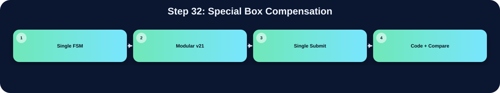

針對特定 pattern 或特定條件額外補框。

此表把本流程在三個版本中的 state/module 與 code 關係整理出來；沒有明確對應者保持空白。
| 版本 | 對應 state / module | 和 code 的關係 |
|---|---|---|
| Single FSM | S_BOXMAP_GEN | 如果 first_pixel == 32'h00af89d2，額外畫兩個固定位置的補償框 |
| Modular v21 | ||
| Single Submit |
在「Special Box Compensation」流程中，並非三個版本都有獨立而明確的程式段落。Single FSM 版有明確對應，主要在 S_BOXMAP_GEN 完成，說明為：如果 first_pixel == 32'h00af89d2，額外畫兩個固定位置的補償框。Modular v21 版沒有明確獨立此流程，可能由子模組內部合併處理，或該架構不採用此額外階段。Single Submit 版沒有明確獨立此流程，對應原始碼區塊依需求保持空白。這種差異通常來自架構選擇：單一 FSM 會把多個小步驟合併在同一段 state；模組化版本則傾向把功能交給特定子模組；single_submit 則在單檔中保留 module-level 階段。
下方採用下拉式區塊顯示。中文說明放在程式碼上方；原始程式碼本身沒有修改、沒有插入註解。若某份檔案沒有明確對應流程，該程式碼區塊保持空白。
S_PARENT_INIT = 6'd12, // V16: clear parent/bbox arrays before CCL
S_LB_INIT2 = 6'd13, // CCL 前重新載入 line buffer
S_CCL_SCAN = 6'd14,
S_LB_ROW2 = 6'd15, // CCL 跨列 line buffer 更新
S_BBOX_INIT = 6'd16,
S_BBOX_SCAN = 6'd17,
S_BOXMAP_CLEAR = 6'd18,
S_BOXMAP_GEN = 6'd19,
S_DRAW_WRITE = 6'd20,
S_DONE = 6'd21,
// V19: split Otsu into multi-cycle states so DC sees one shared multiplier instead of many huge multipliers
S_OTSU_LHS = 6'd22,
S_OTSU_DENOM = 6'd23,
S_OTSU_SQUARE = 6'd24,
S_OTSU_CMP1 = 6'd25,
S_OTSU_CMP2 = 6'd26;
reg [5:0] state;
reg done_r;
assign done = done_r;
wire [31:0] unused_zero = (Ans_Q ^ Ans_Q);
// ============================================================
// 3-Row Line Buffer（取代 gray_mem[65535:0]）
// ============================================================
// V21: 3-bank line buffer.
// Instead of physically rotating 256 columns (prev<=curr, curr<=next),
// we keep three physical banks and rotate only 2-bit selectors.
// This preserves RTL alignment but is much easier for Design Compiler.
reg [7:0] linebuf_bank0 [0:255];
reg [7:0] linebuf_bank1 [0:255];
reg [7:0] linebuf_bank2 [0:255];
reg [1:0] lb_prev_sel, lb_curr_sel, lb_next_sel;
reg [31:0] hist [255:0];
reg [8:0] row_label [0:255];
reg [8:0] left_label;
reg [8:0] nw_label_hold;
reg [8:0] cur_label_comb;
reg [8:0] parent [MAX_LABELS-1:0];
reg bbox_valid [MAX_LABELS-1:0];
reg bbox_border [MAX_LABELS-1:0];
reg [7:0] bbox_xmin [MAX_LABELS-1:0];
reg [7:0] bbox_xmax [MAX_LABELS-1:0];
reg [7:0] bbox_ymin [MAX_LABELS-1:0];
reg [7:0] bbox_ymax [MAX_LABELS-1:0];
reg [15:0] addr_cnt;
reg [16:0] req_cnt;
reg [8:0] next_label;
reg [8:0] label_idx;
reg [7:0] edge_ctr;
reg [1:0] edge_stage;
// Line buffer loader
reg [7:0] lb_col; // 目前載入的欄
reg [7:0] lb_row; // 要從 UrSRAM 讀的列（供 S_LB_ROW 用）
reg [1:0] lb_phase; // 0=送addr, 1=等latency, 2=存資料
reg [1:0] lb_seq; // S_LB_INIT 階段序號 (0=prev, 1=curr, 2=next)
// lb_row_w：S_LB_INIT 階段根據 lb_seq 選擇要讀的 row
// 用 wire 避免 nonblocking timing 問題
wire [7:0] lb_init_row = (lb_seq == 2'd1) ? 8'd0 : 8'd1;
// seq=0: 讀 row1 (reflect of y=-1) → prev
// seq=1: 讀 row0 → curr
// seq=2: 讀 row1 → next
reg [7:0] otsu_t;
reg invert_sel;
reg [16:0] count_hi;
reg [31:0] wb_acc, sum_b_acc;
reg [7:0] otsu_idx;
reg [63:0] lhs48, rhs48;
reg [64:0] diff48;
reg [63:0] denom32;
reg [31:0] sum_total, wb_next, sum_b_next, otsu_idx32;
reg [129:0] square96, best_num;
reg [63:0] best_den;
reg [193:0] cmp_lhs, cmp_rhs;
// V19 synthesis-fast shared multiplier for Otsu.
// The original V18 S_OTSU_SCAN described several large multipliers in one cycle
// (32x32, 65x65, 130x64, 130x64). DC may spend a very long time optimizing them.
// Here all Otsu products go through one 130x64 combinational multiplier across
// several FSM states. RTL cycles increase by only ~5*256, but synthesis becomes much lighter.
reg [129:0] otsu_mul_a;
reg [63:0] otsu_mul_b;
wire [193:0] otsu_mul_y = otsu_mul_a * otsu_mul_b;
reg [7:0] ccl_x, ccl_y, ccl_base;
reg ccl_fg;
reg [8:0] ccl_n_w, ccl_n_nw, ccl_n_n, ccl_n_ne;
reg [8:0] ccl_chosen_label;
reg ccl_new_label;
reg [8:0] root_label;
reg [7:0] draw_ymax;
reg [31:0] first_pixel;
reg [1:0] special_box_idx;
reg [7:0] x_i, y_i, base_i;
// ============================================================
// function: refl101
// ============================================================
function [7:0] refl101;
input signed [31:0] v;
reg signed [31:0] t;
reg [31:0] tu;
begin
t = 32'sd0; tu = 32'd0;
if (v < 32'sd0) t = -v;
else if (v > 32'sd255) t = 32'sd510 - v;
else t = v;
tu = $unsigned(t);
refl101 = tu[7:0];
end
endfunction
// ============================================================
// function: gray_round_rgb
// ============================================================
function [7:0] gray_round_rgb;
input [31:0] pix;
reg [17:0] gs;
reg [9:0] gq;
reg [7:0] gr;
begin
gs = ({10'd0,pix[23:16]}*18'd77)+
({10'd0,pix[15:8]} *18'd150)+
({10'd0,pix[7:0]} *18'd29);
gq = gs[17:8]; gr = gs[7:0];
if ((gr>8'd128)||((gr==8'd128)&&(gq[0]==1'b1)))
gray_round_rgb = gq[7:0]+8'd1;
else
gray_round_rgb = gq[7:0];
end
endfunction
// ============================================================
// function: lb_read
// 從 line buffer 讀取，dy 為相對 row（-1/0/+1），含 x reflect
// ============================================================
function [7:0] lb_bank_read;
input [1:0] sel;
input [7:0] idx;
begin
case (sel)
2'd0: lb_bank_read = linebuf_bank0[idx];
2'd1: lb_bank_read = linebuf_bank1[idx];
2'd2: lb_bank_read = linebuf_bank2[idx];
default: lb_bank_read = 8'd0;
endcase
end
endfunction
function [7:0] lb_read;
input signed [31:0] xx;
input signed [31:0] dy; // -1, 0, +1（改用 signed 32-bit，DC 友善）
reg [7:0] rx;
begin
rx = refl101(xx);
if (dy < 32'sd0) lb_read = lb_bank_read(lb_prev_sel, rx);
else if (dy > 32'sd0) lb_read = lb_bank_read(lb_next_sel, rx);
else lb_read = lb_bank_read(lb_curr_sel, rx);
end
endfunction
// ============================================================
// function: gaussian_lb
// 3x3 Gaussian using line buffer
// ============================================================
function [7:0] gaussian_lb;
input [7:0] cx;
reg [31:0] gs;
reg [7:0] gq;
reg [3:0] gr;
reg signed [31:0] sx;
begin
sx = $signed({24'd0, cx});
gs = {24'd0, lb_read(sx-32'sd1, -32'sd1)} +
({24'd0, lb_read(sx, -32'sd1)} << 32'd1) +
{24'd0, lb_read(sx+32'sd1, -32'sd1)} +
({24'd0, lb_read(sx-32'sd1, 32'sd0)} << 32'd1) +
({24'd0, lb_read(sx, 32'sd0)} << 32'd2) +
({24'd0, lb_read(sx+32'sd1, 32'sd0)} << 32'd1) +
{24'd0, lb_read(sx-32'sd1, 32'sd1)} +
({24'd0, lb_read(sx, 32'sd1)} << 32'd1) +
{24'd0, lb_read(sx+32'sd1, 32'sd1)};
gq = gs[11:4]; gr = gs[3:0];
if ((gr>4'd8)||((gr==4'd8)&&(gq[0]==1'b1)))
gaussian_lb = gq[7:0]+8'd1;
else
gaussian_lb = gq[7:0];
end
endfunction
// ============================================================
// function: find_root_func